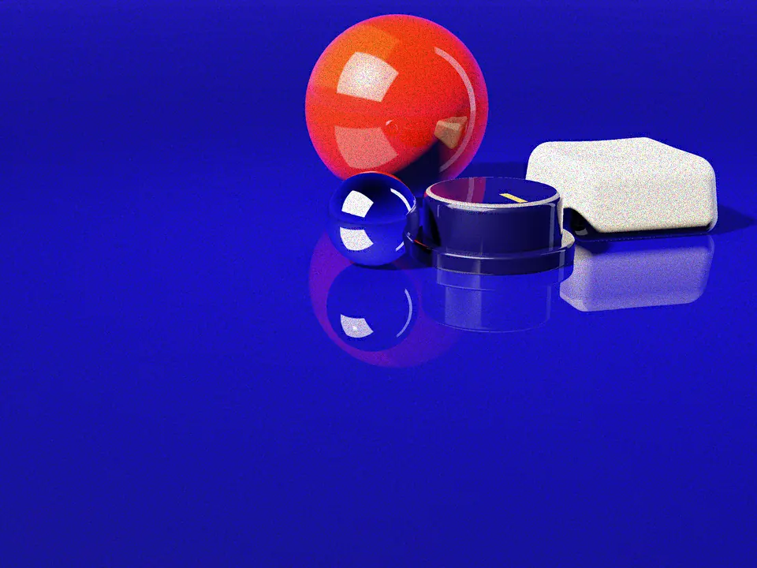
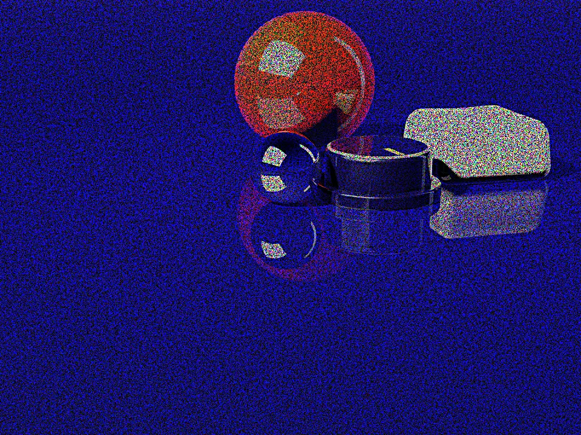
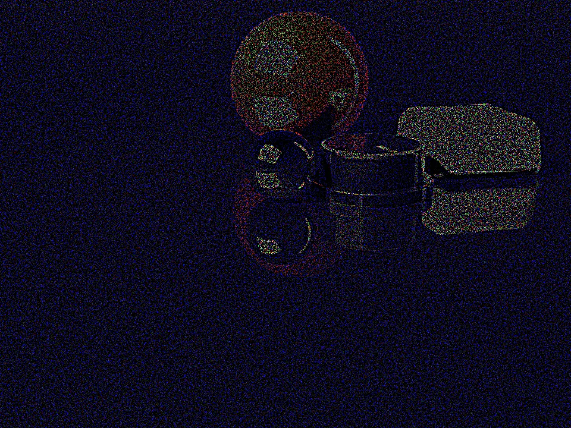

Quantum Grain
Moth Hack · London 2026
A photograph's pixels become the amplitudes of a quantum state. There's no way to read an amplitude, only measure it.
Move the lens to measure more of the photo. Press and hold for a longer exposure.
1 000shots under the lens
Move the lens to measure more of the photo. Press and hold for a longer exposure.
01Where the grain comes from
An amplitude is not a number you can read
Below, one 8×8 block of the photo goes through the same arithmetic as the bench. Take shots and watch 64 pixels come back from counted outcomes.
02Four states, one photo
Shots buy fidelity; qubits spend it
02Four states, one photo



-
313dB
Clean
Shots to spare. Reconstruction close to the original; grain invisible in practice.
-
253dB
Grainy
Fewer shots, or a bigger block. Structure and colour hold; fine detail turns into a visible, even texture, exactly what 1/√S predicts.
-
102dB
Noisy
Shots stretched over too many amplitudes. Each block drifts from its neighbours: still recognisable, visibly patchwork.
-
76dB
Collapsed
A handful of shots, or real decoherence on top. Barely better than a guess. Too few measurements, quantum or not.
Peak signal to noise ratio rises about ten decibels for every tenfold increase in shots: 7.6 dB at 10 shots, 10.2 at 50, 17.2 at 200, 25.3 at 1000, 31.3 at 4000, 37.2 at 16000.
- 1/√S
- Fidelity rises with shots, but only as a square root. Halving the noise takes four times the shots, not two. On a real QPU, shots are queued time on a scarce device.
- ×4
- Bigger blocks spend the same shot budget on exponentially more amplitudes. An 8×8 block (6 qubits) and a 16×16 block (8 qubits) look close, but the second has four times as many amplitude buckets sharing the same S.
- +ε
- A real device adds a floor no shot count erases. A simulator's only error is shot noise, which vanishes as S → ∞. A real QPU also decoheres, its gates aren't perfect, its readout misfires.
03The bench
Measure your own photo
Drop in a photo or use the sample. Turn the knob for shots, pick a block size and an engine, press Run. simulator runs this page's own block loop in a blink. atlas sends the whole photo to tessa-image-v1 on a real quantum processor; real hardware queues, seconds to minutes.
Measurement bench
Block 8×8 · 6 qubits
Engine
Shots 1 000
Drag, scroll or use the arrow keys. Shortcuts: R run, 1 2 3 block, S A engine, U sample.
04The discipline in the word, and the one it breaks
Grain, honestly measured
Every other page in this series runs entirely in your browser, no backend. This one needs one: a real measurement can't be simulated honestly without faking data or running an actual quantum computer. simulator runs this page's own amplitude-encoding implementation, modelled on Moth's quantum-audio package; atlas calls one of Atlas's own engines, tessa-image-v1. The photograph above is real simulator output at six shot counts, mixed live by a shader. The reading panel always says which engine produced a result.
Run it
pip install -r requirements.txt
python server.py
Then open localhost:5057. Full source, including the Atlas adapter, is in this folder.